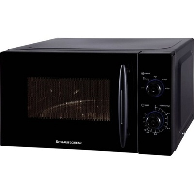

VitaLina+


Микроволновая печь Schaub-Lorenz MWG20-5648
СПЕЦИАЛЬНОЕ ПРЕДЛОЖЕНИЕ! 59,95 Старая цена 69,95 Сбережете 10,00 –14%
Товар на складе (доставка 1 – 3 дня)
• Описание товара
• Технические характеристики
Микроволновая печь Schaub-Lorenz MWG20-5648 Управление: механическое Объём: 20 Л Мощность: 700 W Уровни мощности: 5 Таймер: 35 мин Цвет: чёрный Размеры (В x Ш x Г): 25,8 x 44 x 34 см